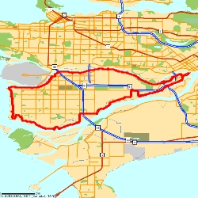

RichmondCycle
This page is dedicated to my wonderful cycling trip around richmond. It's both a cycling trip and a cycle (in the graph theory sense) around lulu island.

||Total time||3:48||6:04 pace|| ||Moving Time||3:22||5:23 pace|| ||Moving speed||11.1 avg||16.5 max|| ||Distance||||37.64 mi||
It's mapped with my nifty new [wiki:Forerunner toy].